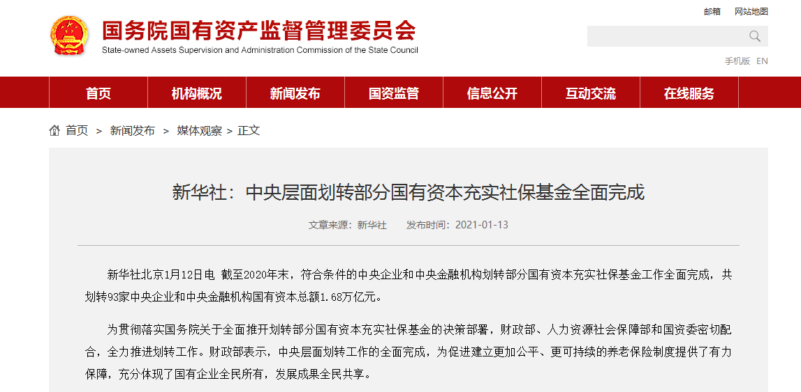

社保补缴是指由于某种原因导致社保有几个月没有正常缴纳，之后又将这些月份的社保补缴上。
在一些城市，如北京、上海、广州等，购房、买车摇号、子女上学等待遇需要外来居民的社保连续缴纳时间时，补缴的月份是算作连续的，所以如果中途出现断缴，可以找代理公司 补缴来实现社保的连续缴纳。
1、补缴方式
官网注册参保:
微信号询问参保:
QQ号询问参保:
2、补缴流程
1.正常下单(通过以上三种方式都可)
2.资料递交(初次参保需要身份证扫描件，社保证等.)
3.在15号可查询社保(我们会在15号统一办理.)
4.确认收货(可以登录官网查看进度.)
3、收费标准